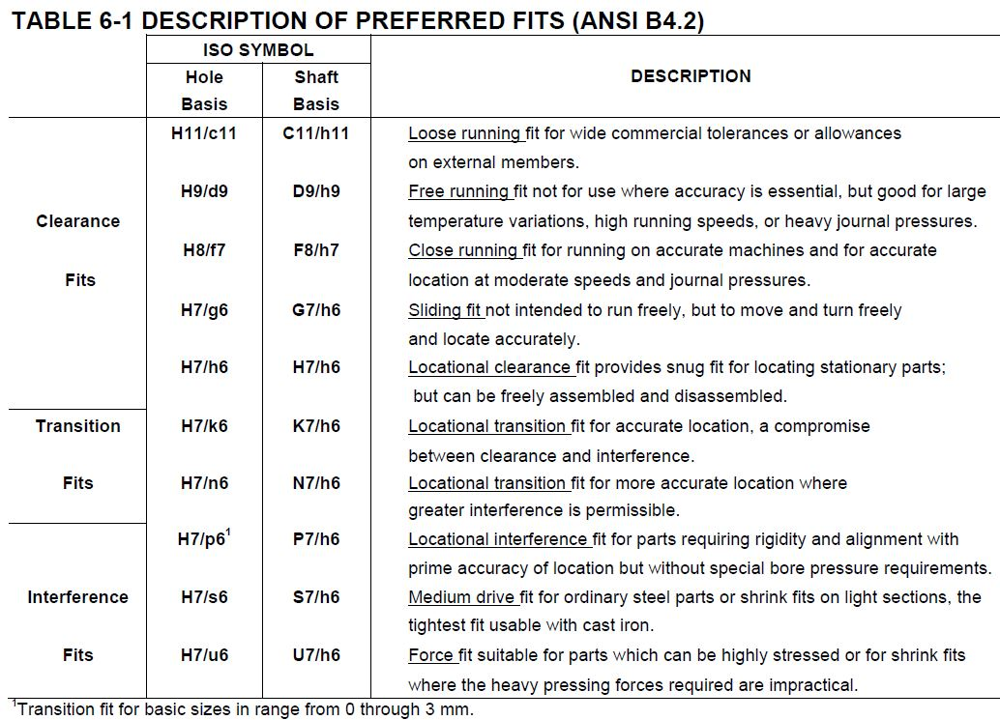

| Hole Basis | Shaft Basis | |
| H11/c11 | C11/h11 | Loose running fit for wide commercial tolerances or allowances on external members. |
| H9/d9 | D9/h9 | Free running fit not for use where accuracy is essential, but good for large temperature variations, high running speeds, or heavy journal pressures. |
| H8/f7 | F8/h7 | Close running fit for running on accurate machines and for accurate location at moderate speeds and journal pressures. |
| H7/g6 | G7/h6 | Sliding fit not intended to run freely, but to move and turn freely and locate accurately. |
| H7/h6 | H7/h6 | Locational clearance fit provides snug fit for locating stationary parts; but can be freely assembled and disassembled. |
| H7/k6 | K7/h6 | Locational transition fit for accurate location, a compromise between clearance and interference. |
| H7/n6 | N7/h6 | Locational transition fit for more accurate location where greater interference is permissible. |
| H7/p61 | P7/h6 | Locational interference fit for parts requiring rigidity and alignment with prime accuracy of location but without special bore pressure requirements. |
| H7/s6 | S7/h6 | Medium drive fit for ordinary steel parts or shrink fits on light sections, the tightest fit usable with cast iron. |
| H7/u6 | U7/h6 | Force fit suitable for parts which can be highly stressed or for shrink fits where the heavy pressing forces required are impractical. |
2014-08-06 01:15:34
The ISO System of Limits and Fits - Tolerances and Deviations
Ref : http://www.gometricusa.org/
